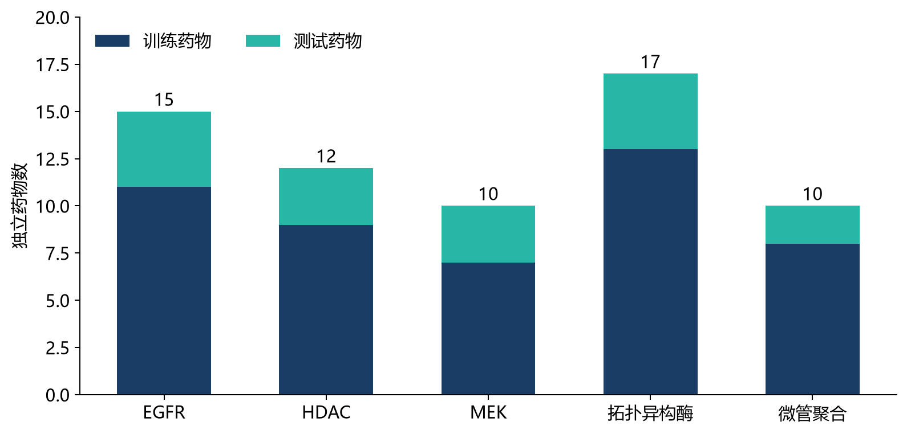
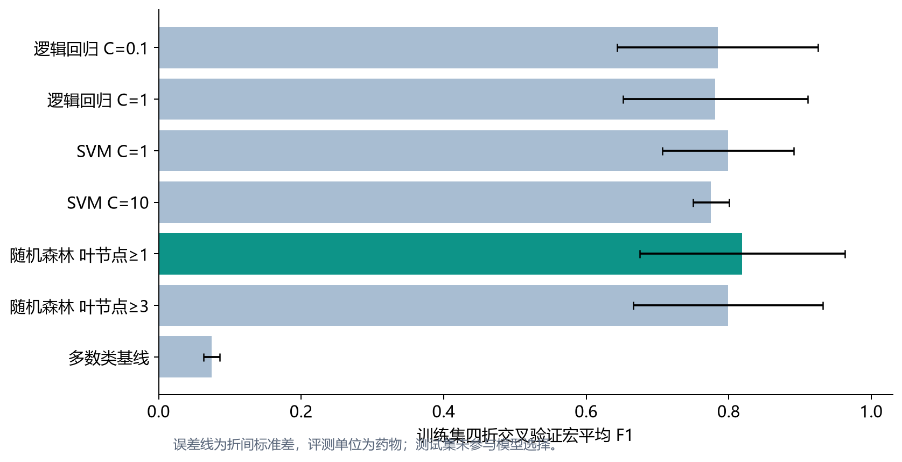
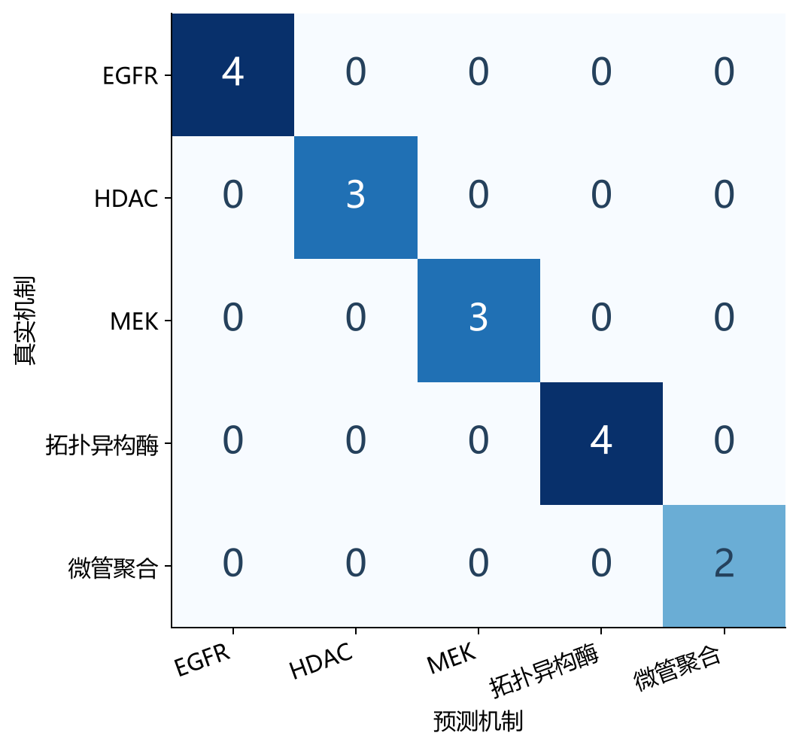
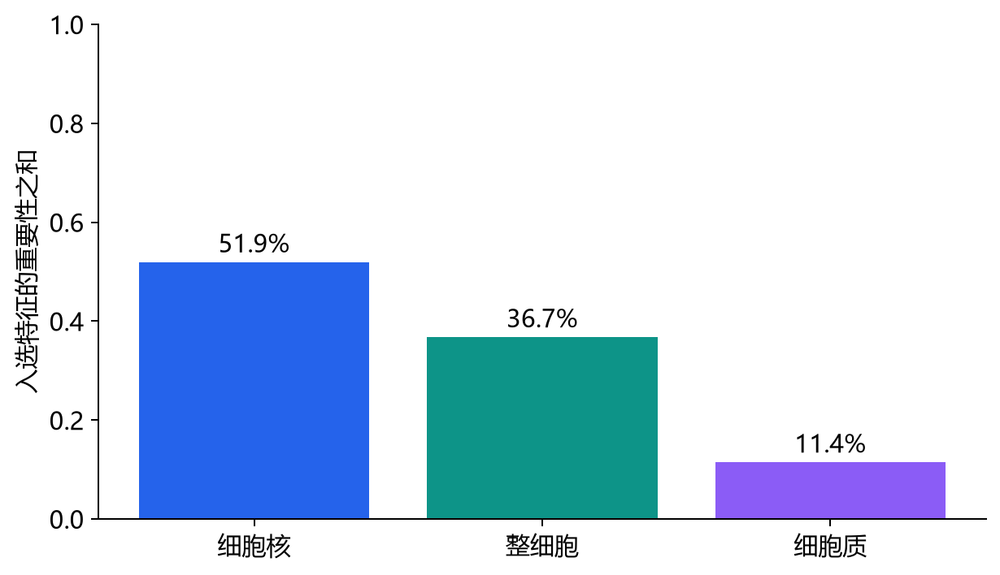
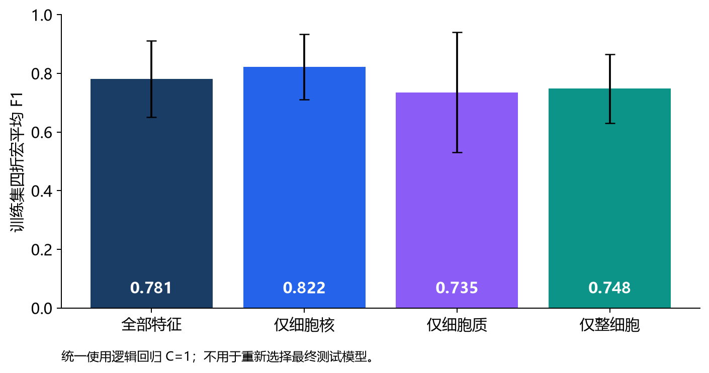

汇报操作：案例查看或运行示例，完成后按 Alt+Tab 返回 PPT
独立药物6448 训练 / 16 测试
剂量样本192每个药物 3 个剂量层级
最终模型随机森林训练集四折验证选出
测试药物判断正确16 / 16准确率 Wilson 95% 区间 80.6%–100%
这是一项小样本、五类机制的概念验证。16 个测试药物全部正确，不能据此声称真实应用准确率为 100%。逐剂量测试为 45 / 48 正确，存在三个真实错误案例。
这个项目在做什么
药物处理会改变细胞的形状、荧光分布和纹理。我们使用公开实验提取的形态数值，判断药物属于哪一种已知作用机制。
输入 1694 个候选形态特征
学习 仅用训练数据筛选 100 个特征
输出 五类机制的模型概率与预测类别
使用上游预处理特征；本项目没有重新拍摄细胞或训练原始图像网络。
五类药物组成

五个课程环节
| Problem | Data | Model | Benchmark | Biological interpretation |
|---|---|---|---|---|
| 细胞形态能否识别未见药物的机制 | 公开 A549 形态共识特征 | 逻辑回归、SVM、随机森林 | 按药物划分、基线、置换、消融 | 核形状、DNA 纹理等形态关联 |
训练集模型比较

锁定测试结果

对角线是正确分类的药物数。测试集共 16 种药物。
指标完整记录
表内为训练集四折均值。最终随机森林测试：药物级宏平均 F1 = 1.000；剂量级宏平均 F1 = 0.936；多数类基线药物准确率 = 0.250。
同一药物的不同剂量放在同一组。缺失值填补、标准化和特征筛选都在每折训练集内拟合，测试集不参与选模型。
选择一个留出测试药物
三个剂量的概率取平均后的机制预测此页回放已保存的留出测试预测。概率是模型输出，尚未验证为可靠的现实风险概率。
不同剂量可能得到不同判断
建议选择 pelitinib、romidepsin 或 mebendazole，查看实际发生的剂量级错误。合并剂量可以改善本例判断，但不保证所有药物都能改善。
核相关特征包含较强判别信息

随机森林入选特征不纯度重要性之和。受特征相关性和数量影响，不能视作生物学贡献的因果比例。
区室消融验证

仅用训练集、统一逻辑回归。核特征单独使用的均值较高，样本少且误差线重叠，不能断言其普遍优于全部特征。
如何解释特征
Nuclei_Granularity_7_DNA：核区域 DNA 通道在特定尺度下的纹理颗粒度。它是图像测量值，不是测序得到的基因表达。
Nuclei_Texture…Mito：核掩膜范围内线粒体染色通道的纹理信号，不表示线粒体进入细胞核。
这些特征与药物标签存在关联，可提出“核形态和细胞状态有判别信息”的解释。要确认直接分子靶点，还需要独立实验。
用保存的真实模型计算新 CSV
上传包含同名形态特征列的 CSV，程序会执行保存的预处理和随机森林模型。只接受与本项目上游处理方式一致的特征，不接受原始细胞照片。
演示输入来自留出测试集。实时接口输出逐行剂量预测；项目药物级指标另将同一药物的三个剂量概率平均。上传文件仅在本机处理。